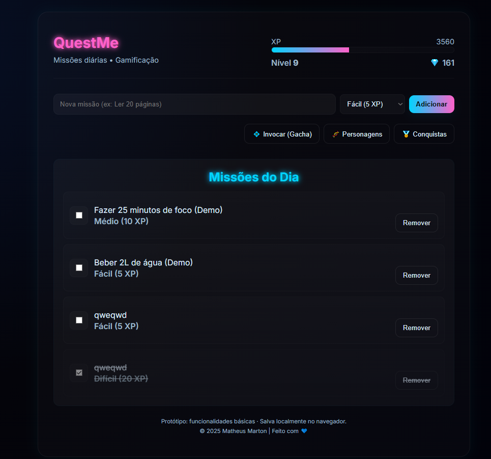

Projetos e Portifolios

Aplicativo de Hábitos Diários
O projeto foi desenvolvido com o objetivo de criar uma experiência gamificada para ajudar usuários a manter hábitos saudáveis de forma divertida.
Ver Projeto
Protótipo de Aplicativo Móvel (UX/UI)
Design de um fluxo de usuário completo, desde wireframes até o protótipo de alta fidelidade, para um aplicativo de nicho.
Ver ProjetoProtótipo de Aplicativo Móvel (UX/UI)
Design de um fluxo de usuário completo, desde wireframes até o protótipo de alta fidelidade, para um aplicativo de nicho.
Ver ProjetoProtótipo de Aplicativo Móvel (UX/UI)
Design de um fluxo de usuário completo, desde wireframes até o protótipo de alta fidelidade, para um aplicativo de nicho.
Ver Projeto